Breakthroughs in Analytical Chemistry#
“It is a capital mistake to theorize before one has data. Insensibly one begins to twist facts to suit theories, instead of theories to suit facts.” – Sherlock Holmes, in Arthur Conan Doyle, “A Scandal in Bohemia,” The Strand Magazine, 1891 – quoted here for its literal truth in this domain: every technique below exists to turn a noisy measurement into a number with a defensible uncertainty attached.
Analytical chemistry is the discipline of answering “how much, and how
sure are we” – separating a mixture into measurable components, titrating
a solution to a detectable endpoint, fitting a calibration line, and
deciding, by a defensible statistical rule rather than a hunch, whether a
stray data point should be thrown out. The systems in
chemistrykit.analytical retrace the handful of ideas that turned
each of those tasks from craft into quantitative method: chromatographic
separation and its plate theory, potentiometric and complexometric
titration and Gran’s linearized endpoints, linear regression and
detection limits, small-sample statistics and interlaboratory precision,
propagation of uncertainty, outlier rejection, retention indices, and
signal smoothing. This chronology traces the major
conceptual breakthroughs behind the package, with a pointer to the
corresponding implementation at each stop.
1805 – Legendre, Gauss, and the Method of Least Squares#
Adrien-Marie Legendre published the first description of fitting a straight line (or any linear model) to noisy data by minimizing the sum of squared residuals, as an appendix – “Sur la Méthode des moindres quarrés” – to a memoir on determining the orbits of comets. Carl Friedrich Gauss published his own, more fully probabilistic derivation of the same method four years later, and claimed (very plausibly, on the strength of his own earlier working notes and later astronomical use) to have been using it in private practice since 1795, touching off a priority dispute that has never been fully resolved either way in the historical record. Whichever came first, the method of least squares gave quantitative science its basic tool for extracting a best-fit relationship, and an honest estimate of that relationship’s uncertainty, from measurements that scatter around a straight line rather than falling exactly on one – the single technique underneath essentially every calibration curve run in an analytical laboratory since.
Implementation: chemistrykit.analytical.utils.regression.linear_fit()
performs exactly this ordinary-least-squares fit
(y = slope*x + intercept), and additionally reports the residual
standard error \(s_{y/x}\) that a calibration curve’s detection limits
(below, 1983) are built from;
fit_calibration() wraps
it into a LinearCalibration
usable directly for predicting concentration from a measured signal.
References: A.-M. Legendre, Nouvelles méthodes pour la détermination des orbites des comètes (Paris: Firmin Didot, 1805), appendix “Sur la Méthode des moindres quarrés”; C. F. Gauss, Theoria Motus Corporum Coelestium in Sectionibus Conicis Solem Ambientium (Hamburg: Perthes & Besser, 1809), Book II, Sec. III.
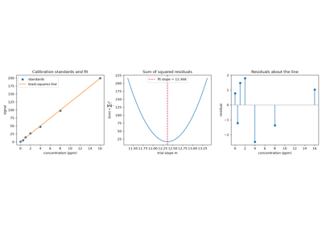
Legendre and Gauss’s least squares: fitting a calibration line
1889 – Nernst’s Equation and Potentiometric Redox Chemistry#
Walther Nernst derived the general thermodynamic relationship between an electrode’s measured potential and the activities (in the dilute-solution limit, concentrations) of the species in the redox couple that sets it:
with Q the reaction quotient of the half-reaction and n the number of electrons transferred. The equation gave electrochemistry its quantitative bridge between a directly measurable quantity – a voltage – and the otherwise inaccessible ratio of oxidized to reduced species in solution, and it very quickly became the basis of a new titration methodology: rather than watching a color-change indicator, an analyst could follow a redox titration’s progress by measuring the electrode potential directly and locating the endpoint at the potential’s point of steepest change, sidestepping indicators unsuitable for some redox couples entirely.
Implementation: chemistrykit.analytical.systems.titration.RedoxTitration
applies the Nernst equation to both half-reactions of a redox titration in
the standard large-equilibrium-constant approximation – the analyte
couple’s potential before the equivalence volume, the titrant couple’s
potential after it, and the classical weighted-average result
\(E_{eq}=(n_1E^\circ_1+n_2E^\circ_2)/(n_1+n_2)\) exactly at
equivalence – with find_equivalence_point()
(inherited from the shared
TitrationCurve base)
locating the endpoint numerically, as the point of steepest potential
change, exactly the way a potentiometric titration is read in practice.
References: W. Nernst, “Die elektromotorische Wirksamkeit der Jonen,” Z. Phys. Chem. 4 (1889), 129-181.
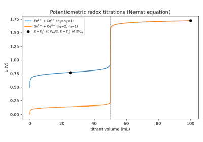
The Nernst equation in a potentiometric redox titration
1901 – 1906 – Tsvet and the Invention of Chromatography#
Mikhail Tsvet, studying plant pigments, packed a glass column with powdered calcium carbonate, poured a petroleum-ether extract of leaf pigments through it, and watched the pigments separate into a series of distinctly colored bands as they traveled down the column at different rates – the different pigments adsorbing to, and desorbing from, the solid packing with different affinities. Tsvet coined the name “chromatography” (literally “color-writing”) for the technique in his 1906 papers, and used it to demonstrate that what had been thought to be a single pigment, chlorophyll, was in fact a mixture of several distinct compounds. Tsvet’s method was largely ignored for over three decades – partly eclipsed by skepticism from established chemists of the era, and by his own early death in 1919 – before being independently rediscovered and extended into the dominant separation technique of modern analytical chemistry, beginning with Martin and Synge’s work below.
Implementation: Tsvet’s column is the physical apparatus that every
formula in chemistrykit.analytical.systems.chromatography is built
to quantify – a mixture separating into discrete, differently-retained
bands as it migrates through a stationary phase –
simulate_chromatogram()
renders that outcome directly, as a sum of separately-retained Gaussian
elution peaks on a simulated detector trace, the modern instrumental
descendant of Tsvet’s visually banded column.
References: M. Tswett, “Adsorptionsanalyse und chromatographische Methode. Anwendung auf die Chemie des Chlorophylls,” Ber. Dtsch. Bot. Ges. 24 (1906), 384-393, and “Physikalisch-chemische Studien über das Chlorophyll. Die Adsorptionen,” same volume, 316-323.
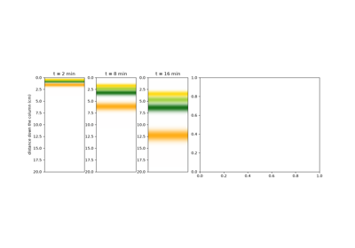
Tsvet’s column: separating leaf pigments into colored bands
1908 – “Student” and the t-Distribution for Small Samples#
William Sealy Gosset, a chemist at the Guinness brewery in Dublin writing under the pseudonym “Student,” worked out the sampling distribution of the ratio of a sample mean’s error to its estimated standard error,
for small samples from a normal population. Because s is itself a noisy estimate of the true standard deviation when n is small, t has much heavier tails than the normal distribution, and a confidence interval built on the normal value 1.96 is far too narrow – for three replicates the correct 95% multiplier is 4.30. The resulting interval \(\bar x\pm t\,s/\sqrt n\) is the standard way an analytical result from a handful of replicate determinations is reported.
Implementation: t_confidence_interval()
returns a ConfidenceIntervalResult
with the mean, s, the two-sided critical t for \(n-1\) degrees of
freedom, and the interval’s ends; its tests check the tabulated t
values and the interval’s nominal coverage on simulated replicates.
References: Student, “The Probable Error of a Mean,” Biometrika 6 (1908), 1-25.
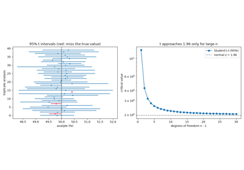
Student’s t: confidence intervals from a few replicates
1941 – Martin, Synge, and the Theoretical-Plate Model#
Archer Martin and Richard Synge introduced partition chromatography – separating compounds by their relative solubility between two liquid phases (one held stationary on an inert support) rather than by adsorption onto a solid, as Tsvet’s original method had – and, in the same paper, borrowed a piece of theory from an entirely different field to describe how a chromatographic band broadens as it migrates: the theoretical-plate model already used to describe the stepwise equilibration of a fractional-distillation column. Treating a chromatographic column as a stack of many small, discrete equilibration stages (“theoretical plates”) gave the field its first quantitative measure of column efficiency, extractable directly from an eluted peak’s retention time and width:
Martin and Synge received the 1952 Nobel Prize in Chemistry for the development of partition chromatography.
Implementation: theoretical_plates()
implements exactly this formula (and its equivalent full-width-at-half-
maximum form, \(N=5.545(t_R/w_{1/2})^2\), verified in its own
docstring to agree with the base-width form for a Gaussian peak of
consistent shape); plate_height()
converts a plate count into the column-length-per-plate H that the van
Deemter equation below predicts directly.
References: A. J. P. Martin and R. L. M. Synge, “A New Form of Chromatogram Employing Two Liquid Phases,” Biochem. J. 35 (1941), 1358-1368.
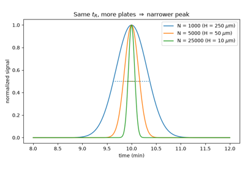
Martin and Synge’s theoretical plates from a peak’s width
1945 – Schwarzenbach and EDTA Complexometric Titration#
Gerold Schwarzenbach, together with E. Kampitsch and R. Steiner, opened a long series of papers (titled, collectively, “Komplexone”) introducing aminopolycarboxylic acid ligands – ethylenediaminetetraacetic acid (EDTA) foremost among them – as general-purpose chelating titrants for metal ions. EDTA’s six potential donor atoms wrap around a single metal cation to form an unusually stable 1:1 complex regardless of the metal’s specific charge or coordination preference, letting one titrant, buffered to an appropriate pH, quantify essentially any of dozens of different metal ions via a color-change or potentiometric endpoint – founding complexometric titration as a general analytical method rather than a family of metal-specific reactions.
Implementation: chemistrykit.analytical.systems.titration.EDTATitration
models exactly this 1:1 complexation \(M+Y\rightleftharpoons MY\) via
its conditional (pH-corrected) formation constant \(K_f'\), solving
the resulting mass-action quadratic in closed form for the free-metal
concentration at each titrant volume, and verifying in its own docstring
that the exact solution approaches the textbook large-\(K_f'\)
approximation \(pM\approx\frac12\log_{10}(K_f'/C_{M,eq})\) at the
equivalence point as \(K_f'\) grows.
References: G. Schwarzenbach, E. Kampitsch, and R. Steiner, “Komplexone I. Über die Salzbildung der Nitrilotriessigsäure,” Helv. Chim. Acta 28 (1945), 828-840, the first of the “Komplexone” series that introduced EDTA and its relatives as general complexometric titrants over the following years.
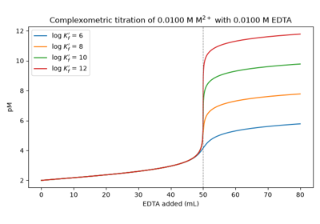
EDTA complexometric titration of a metal ion
1950 – Grubbs’ Test for Outlying Observations#
Frank Grubbs derived the exact sampling distribution, for normally distributed data, of the largest deviation from the sample mean measured in units of the sample standard deviation,
and hence critical values for deciding whether the most extreme point of a sample is an outlier. Unlike Dixon’s gap-over-range ratio (below), G uses every observation through \(\bar x\) and s; Grubbs’ later review (1969) gave the closed-form critical value in terms of Student’s t, which lets the test be applied at any sample size. It is the outlier test recommended in the ISO 5725 standard for interlaboratory studies.
Implementation: grubbs_test() computes
G and compares it with
grubbs_critical_value(),
\(G_{crit}=\frac{n-1}{\sqrt n}\sqrt{t^2/(n-2+t^2)}\) with t the
upper \(\alpha/(2n)\) point of Student’s distribution on
\(n-2\) degrees of freedom, returning a
GrubbsTestResult; tests check tabulated
critical values and that the false-rejection rate on clean data is
\(\alpha\).
References: F. E. Grubbs, “Sample Criteria for Testing Outlying Observations,” Ann. Math. Statist. 21 (1950), 27-58; F. E. Grubbs, “Procedures for Detecting Outlying Observations in Samples,” Technometrics 11 (1969), 1-21.
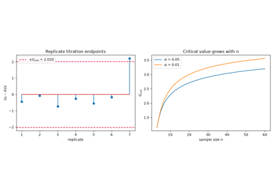
Grubbs’ outlier test: the extreme value in standard deviations
1950 – 1991 – Dixon’s Q-test and Rorabacher’s Revised Critical Values#
W. J. Dixon developed a family of simple statistical tests for rejecting a single suspect outlier from a small data set – too small for the standard large-sample outlier tests of the day to apply usefully – based on the ratio of the “gap” between the suspect value and its nearest neighbor to the full range of the data:
A simplified version of the test, restricted to the single most common case (rejecting the smallest or largest of n replicate measurements) and aimed squarely at working analytical chemists rather than statisticians, was popularized the following year by Robert Dean and Dixon himself, and became – and remains – the standard quick test for a suspect replicate measurement in analytical practice. The critical values in that original 1951 table, however, were computed under a less precise approximation than later became available; D. B. Rorabacher recomputed and extended the critical-value table in 1991 using more accurate Monte Carlo methods, and it is Rorabacher’s revised table, not the original Dean-Dixon values, that this package (and most modern textbooks) actually use.
Implementation: dixon_q_test()
implements exactly this gap-over-range statistic and compares it against
Q_CRITICAL_TABLE, which
reproduces Rorabacher’s revised (not the original Dean-Dixon) critical
values for sample sizes 3-10 at 90%, 95%, and 99% confidence.
References: W. J. Dixon, “Analysis of Extreme Values,” Ann. Math. Statist. 21 (1950), 488-506; R. B. Dean and W. J. Dixon, “Simplified Statistics for Small Numbers of Observations,” Anal. Chem. 23 (1951), 636-638; D. B. Rorabacher, “Statistical Treatment for Rejection of Deviant Values: Critical Values of Dixon’s ‘Q’ Parameter and Related Subrange Ratios at the 95% Confidence Level,” Anal. Chem. 63 (1991), 139-146.

1952 – Gran’s Linearized Titration Plot#
Gunnar Gran showed how to locate a potentiometric titration’s equivalence point without searching for the steepest point of the S-shaped curve, where readings are slowest to settle and least precise. Rearranging the equilibrium expression turns the data taken before the equivalence point into a straight line; for a weak acid titrated with a strong base, \([H^+]=K_a(V_e-V_b)/V_b\) gives
so a plot of \(V_b\,10^{-pH}\) against \(V_b\) extrapolates to zero exactly at the equivalence volume \(V_e\), and its slope gives \(-K_a\). Gran plots made it routine to find endpoints of dilute or weak-acid titrations with poorly defined breaks.
Implementation: gran_plot() forms the
Gran function from volume/pH data and fits it by least squares, returning
a GranPlotResult whose
equivalence_volume and Ka are the line’s x-intercept and negated
slope; it is tested against the exact weak-acid titration curve of
chemistrykit.solutions.systems.titration.WeakAcidStrongBaseTitration.
References: G. Gran, “Determination of the Equivalence Point in Potentiometric Titrations. Part II,” Analyst 77 (1952), 661-671.
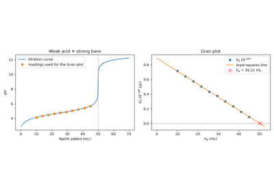
Gran plot: the equivalence point by linear extrapolation
1956 – van Deemter, Zuiderweg, and Klinkenberg: The van Deemter Equation#
J. J. van Deemter, F. J. Zuiderweg, and A. Klinkenberg, working at Royal Dutch Shell’s laboratories, identified and separated the three physically distinct mechanisms that broaden a chromatographic band as it migrates through a packed column, and combined them into a single equation for plate height H as a function of the mobile phase’s linear velocity u:
A (eddy diffusion) reflects the multiple unequal flow paths a packed bed offers; B (longitudinal molecular diffusion) dominates at low velocity, where a band has time to spread by ordinary diffusion; and C (resistance to mass transfer between the mobile and stationary phases) dominates at high velocity, where equilibration between the two phases can no longer keep pace with the flow. Because B and C push plate height in opposite directions as u changes, the equation predicts – and experiments confirm – a single optimum flow velocity, \(u_{opt}=\sqrt{B/C}\), at which column efficiency is maximized; the van Deemter equation remains the standard framework for understanding and optimizing chromatographic column performance to this day.
Implementation: van_deemter_H()
implements exactly this equation;
optimum_flow_velocity()
and minimum_plate_height()
give the closed-form optimum velocity and minimum plate height from
\(dH/du=0\), each verified in its own docstring against a direct
numerical scan of van_deemter_H() itself.
References: J. J. van Deemter, F. J. Zuiderweg, and A. Klinkenberg, “Longitudinal Diffusion and Resistance to Mass Transfer as Causes of Nonideality in Chromatography,” Chem. Eng. Sci. 5 (1956), 271-289.
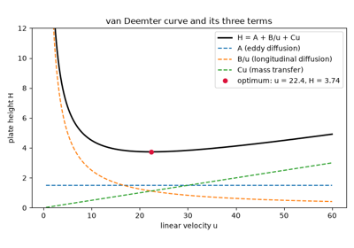
The van Deemter equation and the optimum flow velocity
1958 – Golay and the Open-Tubular Column#
Marcel Golay extended van Deemter’s plate-height theory to a column geometry packed columns cannot offer: a long, narrow, open capillary tube with the stationary phase coated directly on its inner wall rather than held on a packed solid support. Because an open tube has no packing particles at all, it has no unequal packed-bed flow paths to speak of, and Golay showed that the eddy-diffusion term simply vanishes – the van Deemter equation’s A term drops to zero, leaving a column whose efficiency, for a given length, can substantially exceed a packed column’s. The resulting “Golay equation” made possible the long, narrow, extremely efficient capillary columns that displaced packed columns as the standard for gas chromatography within a generation.
Implementation: an open-tubular column is not modeled as a separate
class in this package, but is exactly the \(A=0\) special case of the
same van_deemter_H()
already used for the general (packed-column) case above – the identical
equation, with one physically motivated term switched off, rather than a
separate model requiring its own implementation.
References: M. J. E. Golay, “Theory of Chromatography in Open and Coated Tubular Columns with Round and Rectangular Cross-Sections,” in Gas Chromatography 1958 (Amsterdam Symposium), ed. D. H. Desty (London: Butterworths, 1958), 36-55.
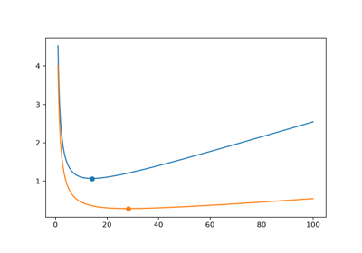
Golay’s open-tubular column: the van Deemter equation with A = 0
1958 – Kováts and the Retention Index#
Ervin Kováts replaced raw gas-chromatographic retention times, which depend on column length, flow rate, and film thickness, with a retention index measured against a ladder of n-alkane standards. Under isothermal conditions the logarithm of an n-alkane’s adjusted retention time \(t'=t_R-t_0\) rises linearly with carbon number, so each n-alkane is assigned \(I=100n\) and any other compound eluting between the alkanes with n and \(n+1\) carbons is placed by logarithmic interpolation:
Retention indices transfer between instruments and laboratories on the same stationary phase and are still the standard way of tabulating GC retention data for compound identification.
Implementation: kovats_retention_index()
implements this interpolation (optionally between non-adjacent alkanes),
with tests confirming that the alkanes themselves get \(I=100n\) and
that a compound on a log-linear alkane series gets its exact
interpolated index.
References: E. Kováts, “Gas-chromatographische Charakterisierung organischer Verbindungen. Teil 1: Retentionsindices aliphatischer Halogenide, Alkohole, Aldehyde und Ketone,” Helv. Chim. Acta 41 (1958), 1915-1932.
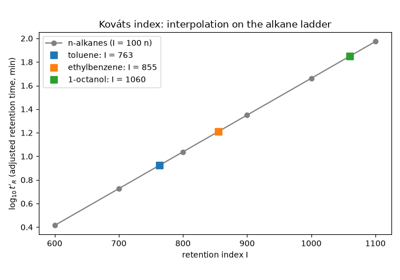
Kováts retention indices from an n-alkane ladder
1960 – Purnell’s Resolution Equation#
Howard Purnell related the resolution of two neighboring peaks, \(R_s=2(t_{R,2}-t_{R,1})/(w_1+w_2)\), to three separately adjustable properties of a separation:
column efficiency (the plate count N), selectivity (the ratio \(\alpha=k_2/k_1\) of retention factors), and retention (\(k_2\)). The equation shows that resolution grows only as \(\sqrt N\), so doubling a column’s length gains just 41%, while even a small increase in \(\alpha\), obtained by changing the stationary or mobile phase, can do far more. It remains the basic framework for developing chromatographic methods.
Implementation: purnell_resolution()
implements this equation; its doctest and tests confirm that it matches
the direct peak-width formula resolution()
exactly when both peaks have the base width \(4t_{R,2}/\sqrt N\).
References: J. H. Purnell, “The Correlation of Separating Power and Efficiency of Gas-Chromatographic Columns,” J. Chem. Soc. (1960), 1268-1274.
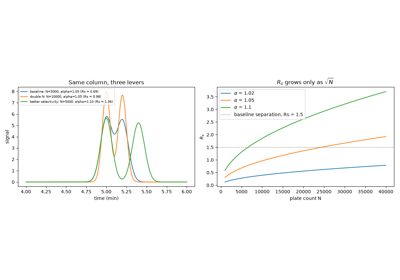
Purnell’s resolution equation: efficiency, selectivity, retention
1964 – Savitzky and Golay’s Least-Squares Smoothing Filter#
Abraham Savitzky and Marcel Golay showed that fitting a low-order polynomial by least squares to each moving window of \(2m+1\) equally spaced points, and keeping the fitted value (or derivative) at the window’s center, is equivalent to a convolution with fixed integer weights that depend only on the window size and polynomial degree – for five points and a quadratic, \((-3,12,17,12,-3)/35\). They tabulated those weights, making least-squares smoothing and differentiation of digitized spectra and chromatograms cheap enough for the laboratory computers of the day. Unlike a moving average, the filter preserves the height and width of narrow peaks much better. Their Analytical Chemistry paper is among the most cited in the journal’s history.
Implementation:
savitzky_golay_coefficients() computes the
convolution weights from the pseudo-inverse of the window’s polynomial
design matrix, and savitzky_golay()
applies them (with polynomial fits for the end points); tests reproduce
the paper’s tabulated weights and match
scipy.signal.savgol_filter.
References: A. Savitzky and M. J. E. Golay, “Smoothing and Differentiation of Data by Simplified Least Squares Procedures,” Anal. Chem. 36 (1964), 1627-1639.
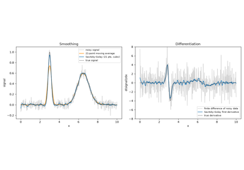
Savitzky-Golay smoothing and derivatives of a noisy spectrum
1966 – Ku’s NBS Formalization of Uncertainty Propagation#
Harry Ku, at the National Bureau of Standards (now NIST), wrote what became the standard expository reference for the propagation-of-error formula already in wide informal use across the physical sciences by the 1960s – consolidating scattered practice into a single systematic statement of the first-order (linearized) propagation law,
for a function \(y=f(x_1,\ldots,x_n)\) of independent, uncorrelated measured quantities, together with worked derivations of the specific sum, product, and power shortcuts that follow from it and the conditions under which the underlying linearization is (and is not) a good approximation. Ku’s paper, still cited in modern metrology guidance, is the standard citation for the propagation-of-uncertainty formula as practiced in analytical and physical chemistry laboratories today.
Implementation: propagate_uncertainty()
evaluates the general formula above directly via numerical partial
derivatives, for a function with no simple closed form;
propagate_sum(),
propagate_product(), and
propagate_power() give
the closed-form sum/product/power shortcuts of the same formula, each
verified in this package’s tests to agree with the general numerical
form for the corresponding operation.
References: H. H. Ku, “Notes on the Use of Propagation of Error Formulas,” J. Res. Natl. Bur. Stand. Sect. C 70C (1966), 263-273.

Propagation of uncertainty with the first-order (Ku) formula
1980 – Horwitz and the “Trumpet” of Interlaboratory Precision#
William Horwitz and co-workers at the U.S. Food and Drug Administration compiled the results of a large body of collaborative (interlaboratory) studies and found that the between-laboratory relative standard deviation depended almost entirely on the analyte’s concentration, not on the analyte, the matrix, or the method:
with C the concentration as a mass fraction – about 2% for a major component, 16% at 1 ppm, and doubling for every 100-fold dilution. Plotted as \(\pm\text{RSD}_R\) against concentration, the curve opens like a trumpet. The ratio of a method’s observed RSD to this prediction (the “HorRat”) is widely used to judge whether a validated method’s precision is acceptable.
Implementation: horwitz_rsd() evaluates
the Horwitz function and horrat() the
HorRat ratio; tests check the doubling per 100-fold dilution and the
equivalent power-law form \(2C^{-0.1505}\).
References: W. Horwitz, L. R. Kamps, and K. W. Boyer, “Quality Assurance in the Analysis of Foods for Trace Constituents,” J. Assoc. Off. Anal. Chem. 63 (1980), 1344-1354.
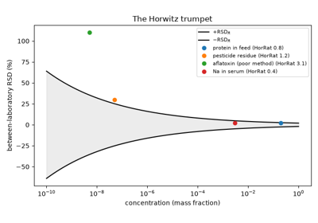
The Horwitz trumpet: interlaboratory precision vs. concentration
1983 – Long, Winefordner, and the IUPAC LOD/LOQ Convention#
Gary Long and James Winefordner surveyed the many mutually inconsistent definitions of an instrument’s “limit of detection” then in circulation across the analytical literature, and argued for the statistically grounded IUPAC definition: a detection limit set by a fixed multiple k of the standard deviation of the blank (or of the calibration residuals), divided by the calibration slope, with \(k=3\) recommended so that the false-positive rate is small under a Gaussian noise model – and with the slope’s own uncertainty taken into account rather than ignored. The calibration-based form of this rule is now the standard way of reporting an analytical method’s detection and quantitation limits; the variant used in method-validation guidance (ICH Q2) fixes the multipliers at 3.3 for detection and 10 for quantitation:
with m the calibration curve’s slope and \(s_{y/x}\) its residual standard error.
Implementation: lod()
and loq()
implement exactly these two formulas, drawing the slope m and residual
standard error \(s_{y/x}\) directly from the
fit_calibration()
least-squares fit (see 1805, above) – so that LOQ is, by construction,
always exactly \(10/3.3\) times LOD, a ratio fixed purely by the convention and
independent of any particular data set.
References: G. L. Long and J. D. Winefordner, “Limit of Detection: A Closer Look at the IUPAC Definition,” Anal. Chem. 55 (1983), 712A-724A.
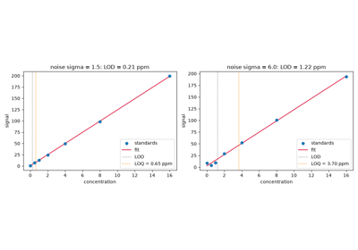
Limits of detection and quantitation from a calibration curve